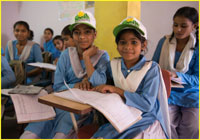
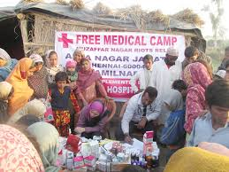
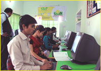
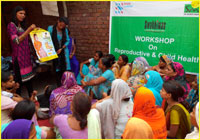
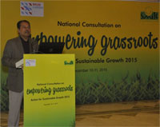
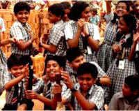
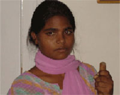
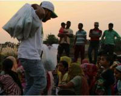

OUR PROGRAMMES
Children are the future of a nation. For an emerging country like India, development of underprivileged children holds the key to the progress of the nation itself, and their education is the cornerstone of this progress. Realizing this, BEING HUMAN Foundation, beginning in the corridors of education, has adopted a lifecycle approach with intensive programmes focused on family health, livelihood and community engagement through women empowerment, which addresses the needs of less privileged children, their families and the larger community.
Salman Khan promoting our Organisation
EducationBEING HUMAN provides basic education and healthcare to underprivileged children, with the belief that education is both the means as well as the end to a better life because it empowers an individual to earn his/her livelihood while also increasing one's awareness. |
HealthcareBEING HUMAN on Wheels is a national level mobile hospital programme which provides curative and preventive healthcare services at the doorsteps of the underserved in remote rural villages and urban slums, besides inculcating a health-seeking behaviour in them. |
LivelihoodBEING HUMAN e-Learning Programme (STeP) evolved as a logical linkage to Mission Education, based on the need to provide employability skills to high school pass-outs and urban underprivileged youth to enhance their prospects of employment in the fast expanding retail, hospitality and service sectors. |
WOMEN EMPLOYMENTBEING HUMAN focusing on girl children and women empowerment. The USP of Swabhiman is its innovative and highly effective approach named the ‘4-S Model’ which means Seeking Healthcare as a Behaviour, Support through Education, Support from Men through Male Involvement, and Sustaining Change in the Community. |
Empowering GrassrootsAt BEING HUMAN we know that the growth of the non-profit sector in India, in the last two decades, has been phenomenal. We particularly, by engaging directly with the people, are able to participate in the thought-making process of the communities they work with, and thus have the capacity to bring about long-lasting positive change. |
Child for ChildBEING HUMAN Foundation belives Children are the future of a nation. They are the best change agents, be it in the family or the community in which they live. It is therefore crucial to catch them young and inculcate in them feelings of empathy and conscience so that they grow up as responsible individuals |
Special Support ProgrammeBEING HUMAN Foundation constantly strives to support and empower individuals, particularly underprivileged children enabling them to meet basic ambitions of their life and realize their potential, make informed choices, resist oppression, fight for rightful existence and facilitate new possibilities for them. |
Disaster ResponseBeing a disaster-prone country, India is highly vulnerable to various types of natural calamities due to its geographical positioning. According to the National Disaster Management Authority, Govt. of India, more than 58.6% of the country’s landmass is prone to earthquakes and over 12% is prone to floods; |